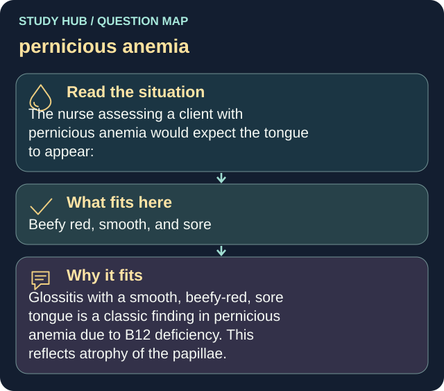

The nurse assessing a client with pernicious anemia would expect the tongue to appear:
Answer
Beefy red, smooth, and sore
Reasoning
Glossitis with a smooth, beefy-red, sore tongue is a classic finding in pernicious anemia due to B12 deficiency.
Clinical detail
This reflects atrophy of the papillae.
Why the other answers do not fit
- Coated and white
- Black and hairy
- Pale with deep fissures only
Shared reasoning for choices without a separate note: Glossitis with a smooth, beefy-red, sore tongue is a classic finding in pernicious anemia due to B12 deficiency. This reflects atrophy of the papillae.
